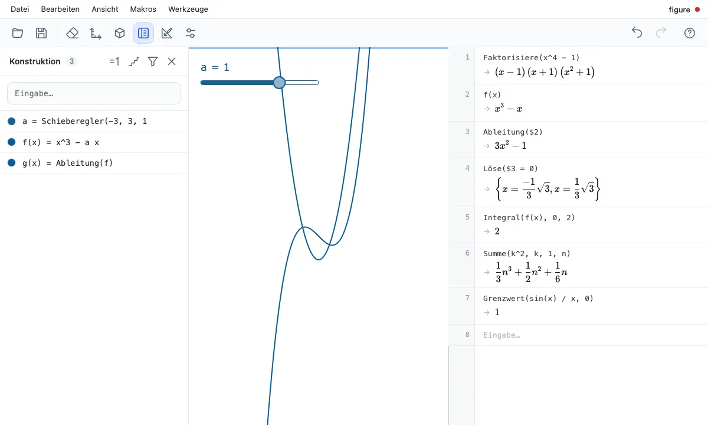

Computeralgebra
DocGeo rechnet mit Giac, dem Computeralgebra-System von Xcas, mit exakten Werten: Ableitungen, Stammfunktionen, Faktorisierungen, Gleichungen, Grenzwerte, Summen, in den Formeln der Figur wie in einer CAS-Ansicht. Es findet auch die Gleichung einer Ortslinie und beweist geometrische Eigenschaften.

Giac wird geladen, wenn eine Berechnung es zum ersten Mal braucht, nie für eine Figur, die es nicht braucht. Die letzten Antworten werden in der Figur gespeichert: Sie öffnet sich und wird angezeigt, ohne auf Giac zu warten, auch offline. Kann Giac nicht geladen werden, erscheint unten links „⚠ Giac“: Die bereits bekannten Antworten bleiben angezeigt, die anderen sind undefiniert.
Die Computeralgebra-Befehle
Sie lassen sich in jeder Formel wie eine Funktion verwenden. Ein Ausdruck, dessen Formel nur aus einem dieser Befehle besteht, zeigt die Antwort von Giac statt seiner Formel.
| Befehl | Ergebnis |
|---|---|
Ableitung(f),
Ableitung(e, v),
Ableitung(e, v, n)
|
Ableitung, n-te Ableitung nach v |
Integral(e),
Integral(e, v)
|
Stammfunktion |
Integral(x^2, 0, a),
Integral(e, v, a, b)
|
Integral von a bis b, exakter Wert |
Faktorisiere(e) |
Faktorisierung über den rationalen Zahlen:
x^2 - 2 bleibt unverändert
|
IFaktorisiere(e) |
Faktorisierung mit Wurzeln: (x − √2)(x + √2) |
Multipliziere(e),
Vereinfache(e)
|
ausmultiplizierte Form, vereinfachte Form |
Löse(x^2 = 2),
Löse(e, v)
|
sortierte Liste der reellen Lösungen einer Gleichung oder eines Terms gleich null |
KLöse(e) |
komplexe Lösungen |
Summe(e, k, a, b) |
Summe der e für ganze k von a bis b |
Grenzwert(e, a),
Grenzwert(e, v, a)
|
Grenzwert an der Stelle a, die auch
∞ sein kann
|
TaylorReihe(e, a, n),
TaylorReihe(e, v, a, n)
|
Taylorpolynom der Ordnung n an der Stelle a |
Die Variable v ist x, y, z oder t, standardmäßig die erste, die
der Ausdruck liest. Eine Funktion der Figur wird mit ihrem Namen
geschrieben: g(x) = Ableitung(f).
-
Ein Schieberegler bleibt für Giac ein Symbol:
Faktorisiere(x^2 - a)zeigt x² − a, auch wenn a gleich 4 ist. Den Schieberegler zu bewegen, fragt Giac also nichts: Die Antwort wird während der Bewegung nur neu ausgewertet. -
Ausnahmen: Die Ordnung n eines Taylorpolynoms und die
Grenzen einer Summe ohne einfache Form (
Summe(1/k, k, 1, n)) werden über ihren Wert gelesen: Ein Schieberegler ergibt eine Antwort je ganzzahligem Wert. -
Integral(f, a, b), wobei f der Name einer Funktion ist, bleibt der Befehl, der die Fläche zeichnet;Integral(x^2, 0, 1)oderIntegral(e, v, a, b)berechnet den exakten Wert. - Solange die Antwort nicht da ist, behält das Objekt seinen letzten Wert. Eine Antwort, die DocGeo nicht lesen kann, macht das Objekt undefiniert. Eine Ableitung berechnet DocGeo selbst, bis Giac antwortet.
Die CAS-Ansicht
Wie in GeoGebra: nummerierte Rechenzeilen, neben der Figur oder in einem eigenen Tab.
| Aktion | Wie |
|---|---|
| Ansicht hinzufügen | Datei › Ansicht › Neue CAS-Ansicht (eine pro Figur), oder Datei › Neuer CAS-Tab („CAS1“, „CAS2“…) |
| Eine Zeile berechnen | in die letzte, leere Zeile tippen, dann Eingabe: Die Antwort erscheint und eine neue Zeile wartet |
| Eine Zeile zurückholen | in der letzten Zeile holt ↑ die vorigen Zeilen zurück, die neueste zuerst, und ↓ führt zum gerade getippten Text zurück, wie in einem Terminal |
| Einen Namen vervollständigen | ab dem zweiten Buchstaben schlägt eine Liste die Befehle, die Funktionen, die Objekte der Figur und die in der Ansicht definierten Namen vor: ↑ und ↓ zum Wählen, Tab oder Eingabe zum Einfügen, Esc zum Schließen |
| Eine Zeile ändern | sie anklicken, dann Eingabe; Esc stellt den vorigen Text wieder her, ↑ und ↓ wechseln die Zeile |
| Eine Zeile löschen | sie leeren, dann Eingabe: Die folgenden Nummern rücken nach |
| Ansicht löschen | Datei › Ansicht › CAS-Ansicht löschen |
Jede Änderung lässt sich mit Rückgängig zurücknehmen. Eine unverständliche Zeile wird abgelehnt, in Rot.
Eine Zeile schreiben
-
Eine Zeile ist eine Formel, mit oder ohne Befehl:
sqrt(12) - sqrt(3)ergibt √3,Faktorisiere(x^4 - 1)die Faktorisierung. -
$2ist die Antwort der Zeile 2. Wird eine Zeile gelöscht, werden die$nneu nummeriert, und ein Verweis auf die gelöschte Zeile wird durch ihre Formel ersetzt. -
b := 3undh(x) := x^2 + 1definieren eine Zahl oder eine Funktion für die folgenden Zeilen. -
Die Objekte der Figur werden mit ihrem aktuellen Wert
gelesen: Mit a = 2 ergibt
a^24. Werden sie bewegt, werden die Zeilen, die sie lesen, neu berechnet. Ein Buchstabe, der kein Objekt ist, ist eine freie Variable:b^2bleibt b². -
piundlnschreibt man wie in GeoGebra,∞auchinf. Winkel sind immer im Bogenmaß, auch in einer Figur in Grad. -
Numerisch(e),Numerisch(e, n)ergeben einen Näherungswert (auf n Stellen);BehalteEingabe(e)zeigt e unverändert, ohne Rechnung. Eine Zeile in Anführungszeichen,"Exakte Rechnung", ist ein einfacher Text. -
?ersetzt eine Antwort, die Giac nicht gibt oder die DocGeo nicht lesen kann.
Mit der Maus zeigen
Beim Tippen einer schon begonnenen Zeile schreibt ein Klick auf
ein Objekt der Figur seinen Namen, ein Klick auf eine andere
Zeile ihr $n. In einer leeren Zeile reagiert die
Figur wie gewohnt.
Ein Objekt der Figur definieren
Eine Definition, die nur Objekte der Figur liest, erzeugt auch
das Objekt, mit seiner Zeile in der Konstruktion:
m(x) := x^2 + a zeichnet die Funktion m. Eine
Definition, die eine freie Variable, ein $n oder
einen nur in der Ansicht definierten Namen liest (n := b^2), bleibt auf die Ansicht beschränkt.
Im Player werden die Zeilen in der Sprache des Browsers angezeigt.
Algebraische Kurven
Eine Gleichung beliebigen Grades oder eine nicht polynomiale, in
der Konstruktion getippt, ist eine Kurve:
f = x^3 + y^3 = 3x y (das kartesische Blatt),
c = sin(x) = y. Sie wird dort gezeichnet, wo sie
das Fenster durchquert, und folgt dem Fenster, wenn man es
verschiebt; man kann Punkte auf sie setzen und sie mit anderen
Objekten schneiden.
| Befehl | Ergebnis |
|---|---|
Ortsliniengleichung(M, P) |
die ganze Kurve, die der Punkt M beschreibt, wenn der Punkt auf Objekt P sein Objekt durchläuft |
Einhüllende(d, P) |
die ganze Kurve, die die Lagen der Geraden d berührt, wenn P sein Objekt durchläuft |
Wie in GeoGebra ist es die ganze Gleichung mit allen Zweigen,
nicht nur der durchlaufene Teil:
Ortsliniengleichung eines Punktes, der eine Strecke
durchläuft, ergibt die Gerade. Bis Giac antwortet, oder für eine
Konstruktion, die es nicht übersetzt (Makros, Winkelhalbierende,
Inkreis, Schieberegler als Antrieb, Raum), ist es die
durchlaufene Ortslinie von
Ortslinie.
Beweisen
Sechs Prädikate, deren Argumente Namen von Objekten sind, sagen,
ob eine Eigenschaft in der Figur, so wie sie ist, gilt:
true oder false.
| Prädikat | Wahr, wenn |
|---|---|
LiegenAufGerade(A, B, C) |
die drei Punkte auf einer Geraden liegen |
SindParallel(d, e),
SindNormal(d, e)
|
die Geraden, Strecken oder Halbgeraden parallel, senkrecht sind |
LiegenAufKreis(A, B, C, D) |
die vier Punkte auf einem Kreis (oder einer Geraden) liegen |
SindKopunktal(d, e, f) |
die drei Geraden durch einen Punkt gehen (oder parallel sind) |
SindGleich(a, b) |
zwei Punkte, Geraden oder Kreise zusammenfallen; zwei Strecken gleich lang sind; zwei Zahlen gleich sind |
Prüfe(p), wobei p eines dieser Prädikate ist, sagt,
ob es allgemein gilt: für alle Lagen der freien Punkte
und der Punkte auf Objekten, ausgenommen Sonderfälle. Mit G =
Schwerpunkt(A, B, C) wird
LiegenAufGerade(A, B, G) wahr, wenn man C auf (AB)
setzt, aber Prüfe(LiegenAufGerade(A, B, G)) bleibt
falsch. Giac übersetzt die Konstruktion in Gleichungen, wie
GeoGebra: Die Antwort kommt spätestens nach einigen Sekunden und
wird in der Figur gespeichert.
-
Die Rechnung erfasst alle Schnittpunkte zugleich: Um vom
zweiten Schnittpunkt einer Geraden und eines Kreises durch
einen Punkt A zu sprechen, konstruiert man ihn mit
AndererSchnittpunkt(c, d, A). -
Prüfebleibt undefiniert für eine Konstruktion, die es nicht übersetzt (die von Ortsliniengleichung, oder ein Winkel, ein Verhältnis oder ein Radius, der kein einfacher Bruch ist, etwa eine Drehung um 60°), und in der CAS-Ansicht. -
Die Argumente sind Namen: zuerst die Geraden konstruieren
und benennen,
Prüfe(SindParallel(d, e)).
GeoGebra-Figuren
Beim Import werden die Computeralgebra-Befehle der Formeln, die
Zeilen der CAS-Ansicht von GeoGebra, die seines Rechners Suite,
LocusEquation, Envelope,
Prove und die Prädikate übernommen. Eine Zelle mit
einem Befehl, den DocGeo nicht hat, wird gemeldet.